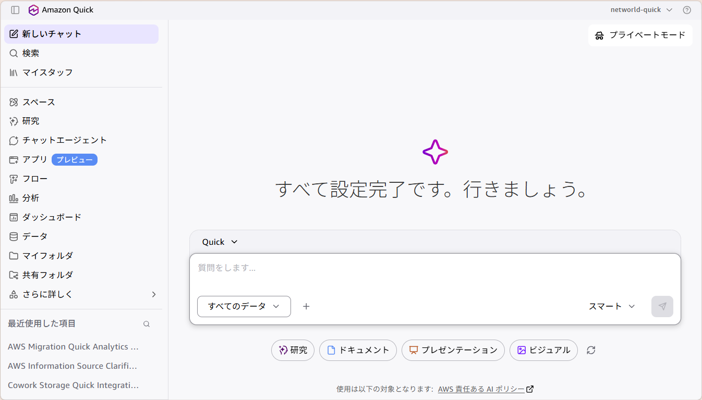
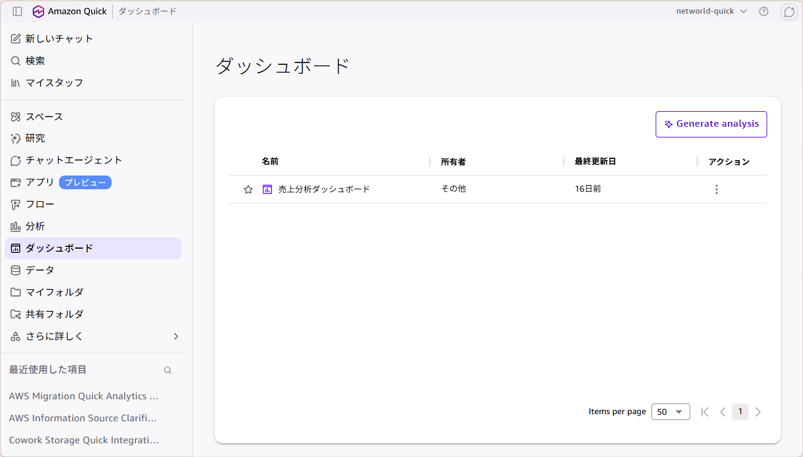
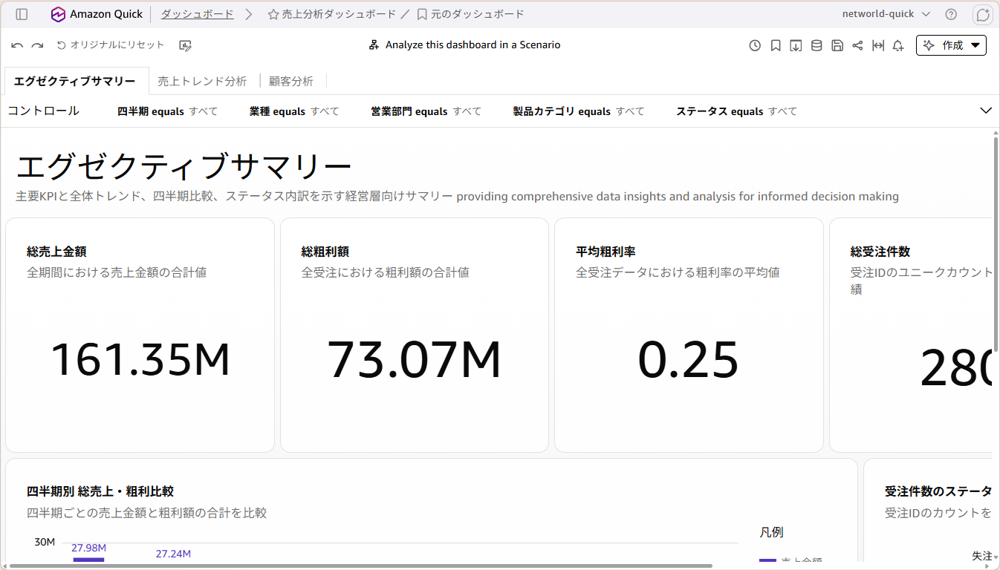
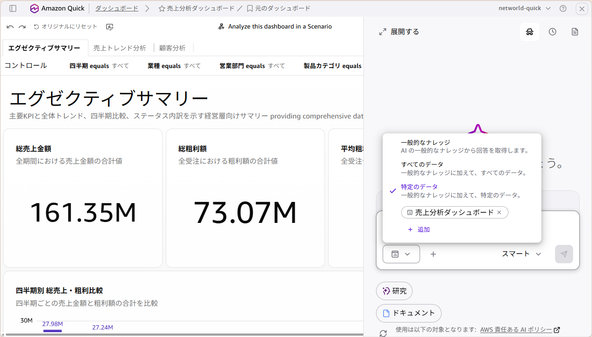

Amazon Quick ハンズオン
営業売上データを AI に自然言語で質問しながら分析し、結果をパワーポイント資料やレポートに自動でまとめます。
ハンズオンを始める所要時間：約 15 分
Amazon Quick のダッシュボードを使って、営業売上データを AI に自然言語で質問しながら分析します。最後に分析結果をパワーポイント資料として出力します。
当日配布された URL・認証情報で Amazon Quick にログインしてください。




ダッシュボードの画面で、以下のような質問を自然言語で入力してみましょう。気になる観点から自由に試してください。
📈 パフォーマンス分析
売上トップの担当者03は、なぜ他の担当者より成績が良いのか？取り扱い製品や顧客に特徴はありますか？粗利率が最も高い担当者は誰ですか？売り上げは高いが粗利率が低い担当者はいますか？📅 トレンド・季節性分析
製品カテゴリ別に、直近4四半期の売上トレンドを比較してください。成長しているカテゴリと衰退しているカテゴリを教えてください。2024年Q4が売上ピークであるが、2025年Q4と比べてどう変化しましたか？🏢 顧客・業界分析
金融業が売上トップだが、1社あたりの平均受注金額が最も高い業界はどこですか？売上上位5社の顧客はどの営業部門が担当していますか？分析が終わったら、以下のプロンプトで結果をパワーポイント資料にまとめてみましょう。
売り上げ分析ダッシュボードの2025年の内容を要約し、経営層に報告するためのパワーポイントファイルを作成して